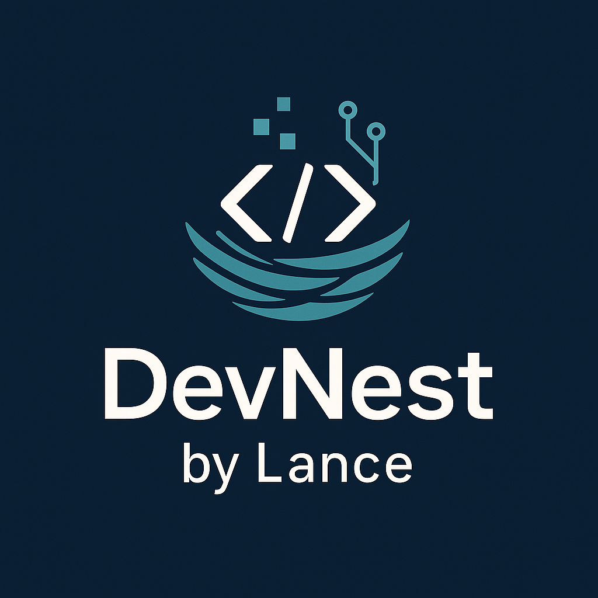

Dimensio is a lightweight mobile application designed to instantly
display the innerWidth and innerHeight of the device it’s installed on.
Perfect for developers, it provides a quick reference to a device’s
screen dimensions in pixels—ideal for testing layouts, building
responsive designs, or targeting specific screen sizes during
development.
© 2025. DevNest by Lance. All rights reserved.